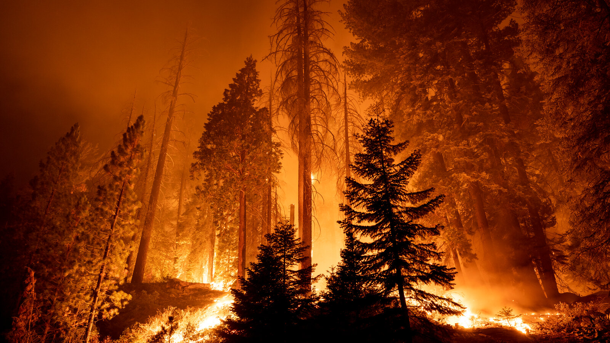

Forest fires cause economic and ecological damage while endangering human lives, so it is imperative to detect forest fires early and to determine the environmental and climate conditions that are conducive to forest fires. If these goals are met, there will be greater preparation and resources for forest fire management.